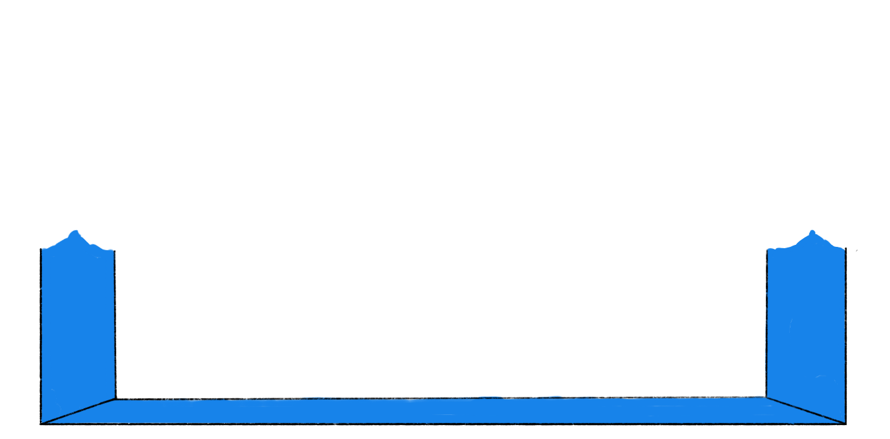
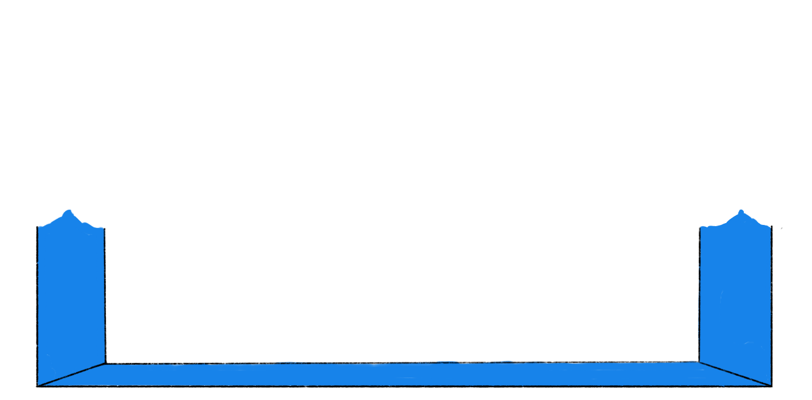

Dari proyek IL ini, kami menyimpulkan bahwa dengan adanya proyek IL, kami memperoleh wawasan dan pelajaran yang tidak diajarkan dalam pelajaran sekolah. Proyek ini mengasah kemampuan life skill kami untuk berwirausaha dan mengelola uang di kemudian hari. Tidak hanya itu, kami juga secara tidak langsung belajar bagaimana cara untuk menjaga kelancaran dan komunikasi dalam sebuah kelompok.
Dengan kelompok yang dibagi secara acak pada awal tahun ajaran, kami mendapatkan pelajaran bahwa penting untuk memiliki kemampuan beradaptasi dan bisa bekerja sama dengan siapa pun. Di masa depan, kami pasti akan menghadapi situasi serupa, bertemu orang-orang baru—di lingkungan sekolah, universitas, mau pun di dunia kerja. Kami memulai dengan memperkenalkan diri kepada anggota lain, saling memberitahu satu sama lain preferensi masing-masing saat sedang bekerja dalam kelompok, dan membuat komitmen kelompok untuk kedepannya. Ini juga membuat kita sadar bahwa terbuka terhadap kelompok memegang peran yang penting dalam menjaga kelancaran dan kenyamanan kelompok.
Di dalam kelompok, kami semua mengusahakan yang terbaik untuk satu sama lain agar kelompok bisa terus berkembang menjadi kelompok yang bisa diandalkan dan dipercaya. Kami berupaya untuk menciptakan kelompok yang mampu bekerja sama dan berkomunikasi dengan baik. Sebisa mungkin, kami menerima pendapat dan ide satu sama lain karena kami percaya bahwa pendapat dan ide dari anggota lain bisa membuat kelompok menjadi semakin baik. Meskipun belum lama kenal, kelompok kami juga tetap memberikan dukungan kepada sesama karena semua ini kami lalui bersama-sama. Selain itu, masing-masing dari kami bersedia menerima kritik, saran, serta masukan dari siapa pun, kami menyuarakan hal-hal tersebut untuk saling membangun—bukan untuk saling menjatuhkan.
Proyek IL ini mengajarkan kami untuk memahami kekurangan anggota kelompok lain. Proyek ini memberikan kami beberapa pekerjaan yang belum pernah kami kerjakan sebelumnya, maka wajar jika kami harus melalui berbagai kesulitan. Setiap anggota pasti memiliki cara masing-masing untuk menghadapi kesulitan tersebut, tetapi hal ini tidak bisa dijadikan sebagai hambatan dalam kelompok, melainkan dijadikan untuk sandaran.
IL bazar merupakan salah satu praktik kewirausahaan yang benar dapat melatih keterampilan siswi dalam berbagai bidang dan aspek, melatih kekreatifan siswi agar terintegrasi dengan jiwa kewirausahaan yang mampu menghasilkan dan mengembangkan ide baru, menyelesaikan masalah, serta menyadari situasi dan peluang di sekitar. Akan baik adanya jika kedepannya dapat memvariasikan metode penerapan agar lebih luas cakupannya dalam mengambil nilai-nilai serta pembelajaran. Variasi praktik kewirausahaan tersebut dapat berupa praktik kewirausahaan sosial atau praktik mengelola suatu acara Kemudian, berdasarkan kesimpulan di atas, kami dapat menyampaikan saran-saran sebagai berikut:
Mempertahankan praktik IL terhadap angkatan tahun ajaran baru dan seterusnya. Dalam penyampaian materi selama proses pengajaran IL dapat menyertakan pengangkatan topik mendalam–bukan hanya sekilas–mengenai kejadian-kejadian nyata dan aktual yang terjadi pada angkatan sebelumnya, sehingga dapat ditelaah dan dianalisis guna siswi tidak mengulang kesalahan yang sama.
Menyusun materi IL dengan lebih detail, jelas, dan efektif, sehingga lebih mudah untuk dipahami dan dikerjakan oleh para siswi. Guru berekspektasi kepada murid untuk mengerjakan keseluruhan kegiatan menggunakan kapasitas yang maksimal. Namun, komunikasi dan pekerjaan siswi akan tercipta dengan optimal jika juga terdapat komunikasi yang baik antar guru yang berkolaborasi. Guru-guru yang berkolaborasi dan mengintegrasikan materi bersama perlu menyamakan konten dengan terang dan tegas, sehingga siswi tidak bingung dalam mencari jawaban tepat jika bertanya pada guru yang berbeda namun tetap dalam satu proyek kolaborasi.
Penerapan teori dalam praktik, seperti cara berproses dalam bisnis, mengatur keuangan, merancang produk dan harganya, promosi/pemasaran, merupakan hal yang tidak kalah penting agar tidak terjadi kesalahan yang signifikan. Maka dari itu, siswi perlu mendengarkan serta memahami penjelasan guru dan penyampaian materinya baik. Lalu, siswi diharapkan dapat mengambil pembelajaran-pembelajaran yang terkandung dalam praktik IL, sehingga dapat diterapkan dalam setiap pekerjaan di kemudian hari. Kemudian, adalah sebuah hal yang sangat esensial bagi siswi untuk lebih memanfaatkan waktu yang diberikan dengan baik, sehingga dapat mengerjakan tugas dengan optimal dalam kurun waktu yang diberikan.